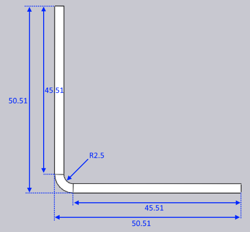

Fitur Adapt Geometry
Dokumen ini menjelaskan tiga opsi proses berbeda yang tersedia dengan fitur Adapt Geometry:

Fungsi Adapt Geometry dipanggil ketika bagian input tidak sesuai dengan kondisi proses aktual. Satu atau kedua masalah ini mungkin ada pada bagian:
-
Radius dalam dari lekukan mungkin terlalu kecil. Setiap proses (seperti panel-bending, atau press-brake air-bending) akan memiliki radius dalam minimum yang mungkin dengan proses tersebut. Jika radius desain bagian lebih kecil dari ini, bagian tidak dapat diproduksi sesuai desain; radius perlu diubah.
-
K-factor dari garis lekuk mungkin salah. Mesin proses (panel-bender vs press-brake) dan alat atau kondisi proses (punch/die/folding blade/air-gap) semuanya berkombinasi untuk menentukan K-factor aktual dari lekukan. Lekukan mungkin dirancang dengan K factor yang berbeda.[1]
Mari kita ambil bagian 2-D sederhana yang me.miliki radius yang salah dan K-factor yang salah, dan lihat bagaimana fungsi Adapt Geometry memodifikasi bagian ini.

Bagian 2D input ditunjukkan di atas - ini adalah persegi panjang sederhana dengan satu garis lekuk tepat di tengah. Lebar bagian adalah 96.75 mm. Ketebalan material adalah 2.5mm.
Garis lekuk telah dirancang dengan radius dalam 0.5, dan K-factor 0.5. Lebar datar (panjang garis netral) oleh karena itu:
angle * (innerRadius + kFactor * thickness) = PI/2 * (0.5 + 0.5 * 2.5) = 2.75 mm
Karena ini adalah lekukan 90 derajat, pengurangan lekukan adalah:
2 * thickness - flatWidth = 2 * 3 - 2.75 = 3.25 mm
Don’t Change Anything
Ketika dilipat tanpa pemrosesan Adapt Geometry apa pun, ini oleh karena itu menciptakan bagian dengan dimensi ini:

Ini juga persis hasil yang kita dapatkan dengan opsi Don’t Change Anything. Baik K-factor maupun radius tidak diubah, menghasilkan bagian 3D yang sesuai persis dengan maksud desain gambar 2D. Jika ini diatur untuk pembuatan, bagian yang diproduksi tidak akan benar-benar sesuai dengan dimensi ini, terutama karena lekukan yang dihasilkan pada mesin akan bervariasi baik dalam radius maupun K-factor efektif daripada lekukan yang dirancang. Dalam hal ini, Anda akan mendapatkan bagian yang sedikit lebih kecil dari 50x50 setelah pembuatan.
Retain Flat Size
Jika opsi ini dipilih, TecZone akan menjaga ukuran datar tidak berubah, tetapi akan memberi anotasi pada garis lekuk dengan radius lekuk dan K-factor yang benar. Mari kita asumsikan bahwa radius lekuk yang benar adalah 2.5mm dan K-Factor adalah 0.46 mm. Bagian sekarang pertama-tama akan diubah secara internal menjadi ini:

Perhatikan bagaimana ukuran bagian keseluruhan tidak berubah (masih 96.75 mm), dan posisi garis lekuk tidak berubah. Namun, lekukan sekarang berradius 2.5, dan K-factor 0.46, yang berarti lebar datar lekukan telah meningkat menjadi 5.73. Ini sekarang dilipat untuk menghasilkan berikut ini:

Seperti yang Anda lihat, dimensi 2D dari bagian tidak berubah, tetapi dimensi 3-D telah berubah menjadi 50.51 x 50.51 (dari dimensi desain awal 50 x 50).
Retain 3-D Dimension
Jika opsi ini dipilih, dimensi 3D bagian tidak berubah, tetapi karena radius lekuk dan K-factor diubah, bagian yang dibuka lipatannya akan berubah. Ketika memulai dengan datar 2-D (seperti dalam contoh ini), TecZone mengikuti langkah-langkah berikut.
-
Lipat model ke 3D, menggunakan maksud desain awal radius dan K-Factor. Ini akan menghasilkan model 3D yang terlihat identik dengan yang ada di Gambar 2.
-
Sekarang, ubah radius ke radius target 2.5mm dan K-factor ke target 0.46. Ini akan menghasilkan model 3D seperti yang di bawah ini:

-
Model ini kemudian dibuka lipatannya (menggunakan K-factor 0.46 untuk lekukan) untuk menghasilkan datar berikut:

Dengan opsi ini, dimensi 3D dipertahankan pada dimensi desain 50x50. Lebar bagian yang dibuka lipatan telah berubah dari 96.75 menjadi 95.73 mm.
Ringkasan
-
Jika datar belum diproduksi, opsi terbaik biasanya adalah Retain 3-D Dimension
-
Jika datar telah diproduksi dan tidak dapat dimodifikasi, opsi terbaik adalah Retain Flat Size
Kedua opsi ini akan menghasilkan bagian di mana hasil manufaktur akhir harus sesuai dengan data 3D seperti yang terlihat di jendela TecZone. Sebaliknya, opsi Don’t Change Anything akan menghasilkan bagian manufaktur akhir yang tidak akan sesuai dengan data 3D yang terlihat di TecZone, karena radius lekuk aktual dan K-factor tidak dimodelkan dengan benar dalam desain.